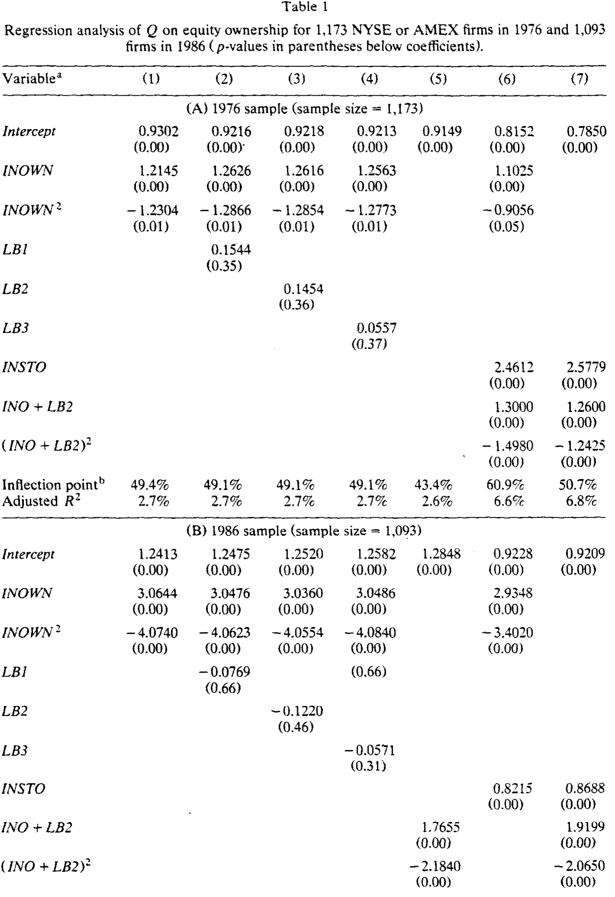
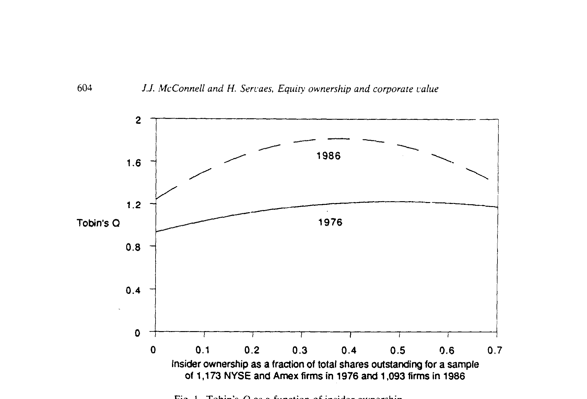
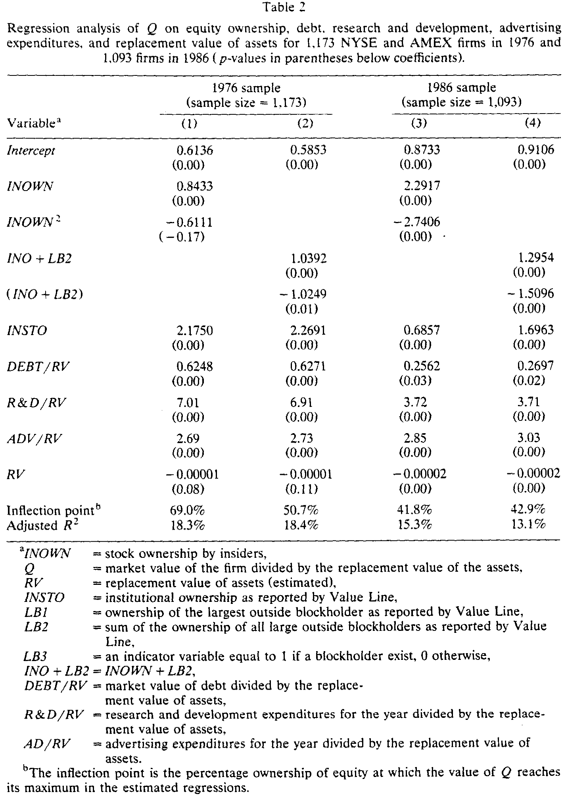
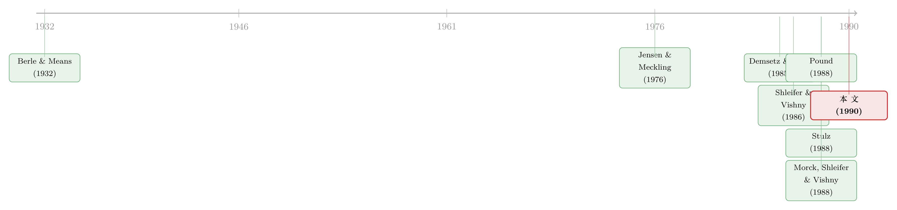

老板该持多少股？——一条先升后降的公司价值曲线
本文读的是 McConnell & Servaes (1990, Journal of Financial Economics)：用 1976 年 1,173 家、1986 年 1,093 家 NYSE/AMEX 公司，作者发现 托宾 Q 值 (Tobin's Q) 与内部人持股之间是一条先升后降的倒 U 形曲线——拐点落在 40%–50% 之间；机构投资者持股越高，Q 越高；而单独的大宗股东 (blockholder) 持股，对 Q 几乎没有独立影响。一句话：公司值多少钱，和「股票握在谁手里」有关。
1 一个被传统金融学「抹平」的问题
很长一段时间里，金融理论对「谁持有股票」是不在乎的。教科书里那个标准画像，是一群广泛分散、彼此雷同、对公司事务漠不关心的缺席股东——他们对公司的影响力，无非是「用脚投票」：不满意就卖掉走人。至于经理人会不会偷懒、会不会以权谋私，自有别的力量替股东盯着：资本市场会给信号 [Easterbrook (1984)]，经理人劳动力市场会施加压力 [Fama (1980)]，实在不行还有外部收购这把悬在头顶的剑 [Manne (1965)]。
换句话说，在这套叙事里，股东是面目模糊的、可以互相替换的，所有权的「分布」无关紧要。
但这套看法并非没有挑战者。挑战的源头，通常被追溯到 Berle & Means (1932)：当经理人自己不持股时，他和分散的外部股东之间就埋下了利益冲突。这个直觉，被 Jensen & Meckling (1976) 第一次形式化了。
于是一个自然的问题冒了出来：如果所有权的分布真的重要，那它和公司价值之间，究竟是一种什么形状的关系？
这就是 McConnell 和 Servaes 这篇 1990 年 JFE 论文要回答的全部。它不复杂，甚至可以说朴素——一组横截面回归而已。但它落在了一个吵得不可开交的节点上，并且给出了一个干净得出奇的答案。
2 两种理论，两种「形状」
要理解这篇论文的贡献，得先看清它要在两种相互矛盾的预言之间做裁判。
第一种声音说：单调向上。 Jensen & Meckling (1976) 把股东分成两类——一类是手握全部投票权、亲自经营的「内部股东」，另一类是没有投票权的外部股东。两类人每股分红相同，但内部股东可以额外「消费」一些无法变现的在职津贴 (perquisites)。这就给了经理人一个动机：去搞那些对自己有利、却损害外部股东的投资与融资。而内部人持股越多，他从「损人」中得到的好处就越被自己承担的损失抵消——利益趋同 (alignment)。所以，内部人持股比例越高，公司价值越高。
第二种声音说：先升后降。 Stulz (1988) 把目光投向收购市场。在他的模型里，敌意收购方要拿下一家公司，得付的溢价随经理人持股上升而上升，但收购成功的概率却随之下降。当经理人持股很低时，收购更容易以低于收购方愿付上限的价格成交；持股越高，任意给定溢价下成功的概率越低；到 50% 时，敌意收购的概率干脆归零。这条逻辑推出一条曲线：公司价值随经理人持股先升后降，并在持股达到 50% 时降到最低。（关于经理人财富如何左右一场收购，可参见《老板该不该抵抗收购？答案写在他自己的股票里》。）
还有第三种、第四种声音。Demsetz (1983) 干脆釜底抽薪：所有权结构本身是竞争性选择下的内生均衡产物，所以它和盈利能力之间根本不该有关系；Demsetz & Lehn (1985) 用 511 家公司 1980 年的会计利润率回归各种所有权集中度指标，确实没找到显著相关。而 Morck, Shleifer & Vishny (1988) 走了另一条路：他们用分段线性 (piece-wise linear) 回归，发现 Q 随内部人持股先升（0–5%）、再降（5–25%）、再略升（>25%）——一个怪异的、上-下-上的非单调形状。Hermalin & Weisbach (1987) 又得到第三种折线。
注意此处的张力：到 1990 年，关于「持股 vs. 价值」的形状，文献里同时存在「无关」「单调上升」「倒 U」「上-下-上折线」四种结论。McConnell-Servaes 的任务，就是用更大、更干净的样本，看哪种形状站得住。
3 识别策略：一条二次曲线，和它的拐点
McConnell-Servaes 的做法朴素到可以一句话说清：把 Tobin's Q 对内部人持股及其平方做回归，看二次项的符号。
被解释变量 Q，定义为「普通股市值 + 债务与优先股的估计市值」除以「资产的重置价值 (replacement value)」——用的是 Lindenberg & Ross (1981) 算法的一个变体来估算分子分母。核心回归是这样一条二次型：
这里 INOWN 是内部人（高管 + 董事会成员）持股占总股本的比例，INSTO 是机构投资者持股比例。识别的全部重量，压在二次项系数 β₂ 的符号上：如果 β₁>0 且 β₂<0，曲线就是一座「先升后降」的山；山顶（拐点）落在
$$\text{inflection point} = -\frac{\beta_1}{2\beta_2}.$$
为什么这套设计能在四种理论里做裁判？因为 Jensen-Meckling 预言一条直线（β₂≈0），Demsetz 预言什么都不显著，Stulz 预言一座山。一个二次项的符号，就能把它们分开。 这正是这篇论文最聪明的地方：不靠花哨的工具变量，而靠一个函数形式的选择，让相互竞争的假说各自暴露出可被证伪的特征。
数据方面：内部人和大宗股东持股来自 1976、1986 两期的 Value Line Investment Survey（Value Line 把「内部人」定义为高管与董事，数据来自代理声明书、SEC 的 Form 3/4 等），Q 值与控制变量来自 1987 年的 Compustat 磁带。金融类公司被剔除，Q 值大于 6.0 的非金融公司也被删掉以规避异常值（1976 损失 2 家、1986 损失 9 家）。最终样本：1976 年 1,173 家，1986 年 1,093 家，全部在 NYSE 或 AMEX 上市。
一个值得记下的背景数字：1976 年平均内部人持股 13.9%（中位数 6%），1986 年 11.84%（中位数 5%）；而平均机构持股从 1976 年的 4.65% 暴涨到 1986 年的 37.6%——后面我们会看到，这个时代变迁恰好让作者能在两个截然不同的「机构持股环境」里各做一次检验。
4 主要结果：那座山，真的在那儿
先看核心回归。表 1 的第 (1) 列是基础模型——Q 对 INOWN 和 INOWN² 回归。

Table 1
结果两期一致、而且漂亮：
- 1976 年：
INOWN系数1.2145（p=0.00），INOWN²系数-1.2304（p=0.01）。二次项显著为负——山形成立。拐点 = 1.2145 / (2×1.2304) ≈ 49.4%。 - 1986 年：
INOWN系数3.0644（p=0.00），INOWN²系数-4.0740（p=0.00）。拐点 = 3.0644 / (2×4.0740) ≈ 37.6%。
把这两条曲线画出来，就是论文里那张著名的图。

Figure 1: Tobin’s Q as a function of insider ownership
如图 1 所示，曲线在低持股区间陡峭上扬，越过 40%–50% 的拐点后，只是轻微地向下倾斜。低持股处的斜率尤其有冲击力：1976 年，内部人持股每增加 10%，Q 大约同步上升 10%（近乎一对一）；到了 1986 年，这个比例变成了近乎三对一——10% 的持股增量对应约 30% 的 Q 提升。
但真正关键的一步，是它和 Stulz (1988) 的对账。曲线先升后降、且在 50% 之前到顶——这两点都和 Stulz 吻合。可 Stulz 还有一个更强的预言：曲线在经理人持股 50% 时降到最低点，也就是说，内部人持有 50% 时的公司价值应当低于他们持有 0% 时。这一点没有被数据支持。 论文明确写道：无论 1976 还是 1986，哪怕在 75% 持股处，公司价值仍高于 0% 持股处。换句话说，这座山的右半坡，缓得几乎不像 Stulz 预言的悬崖。
于是反转出现：大宗股东去哪儿了？ 作者在第 (2)、(3)、(4) 列里分别加入「最大单一大宗股东持股」LB1、「全部大宗股东持股之和」LB2、以及「是否存在大宗股东」的哑变量 LB3。结果令人意外——没有任何一个大宗股东变量，在哪怕 20% 的显著性水平上进入回归。 这与 Shleifer & Vishny (1986)「大股东能起监督作用、应当推高价值」的预言并不一致，倒是和 Holderness & Sheehan (1988)「单一支配股东与业绩无显著关系」的发现对得上。
不过这里有个微妙的处理。Value Line 对大宗股东的界定本就含糊（5% 以上，但也含部分不足 5% 者），而一个创始人后裔持有的大宗股权，可能纯属被动投资，最该被当作「内部人」。所以作者在第 (5) 列里把大宗股东与内部人合并成 (INO+LB2)：合并后，线性项显著为正、平方项显著为负，山形再现。这暗示着大宗股东的影响，可能是通过和内部人交互而非独立地作用于公司价值——一条留待后人解开的线索。
最后是机构投资者。第 (6) 列把 INSTO 放进来：系数在两期都显著为正（1976 年 2.4612，1986 年 0.8215，均 p=0.00）。这支持 Pound (1988) 的「效率监督假说」（efficient-monitoring hypothesis）——机构比分散的小股东更有专长、监督成本更低。更有意思的是，加入机构持股后，内部人那条曲线的拐点被往右推：1976 年从 49.4% 升到 60.9%，1986 年从 37.6% 升到 43.2%。这像是在说，机构持股强化了内部人持股的正向效应。
5 它会不会只是个「伪相关」？
一个聪明的读者此刻一定在嘀咕：Q 和所有权之间的相关，会不会只是因为它们都和某个第三变量（比如成长性、行业、规模）相关？这正是横截面回归的阿喀琉斯之踵。
作者于是加入一组控制变量：财务杠杆 DEBT/RV、研发强度 R&D/RV、广告强度 ADV/RV，以及资产重置价值 RV 本身（控制规模）。

Table 2
如表 2 所示，结论稳如磐石：内部人持股的倒 U 关系依然清晰，拐点相比表 1 几乎没动，机构持股的系数仍然显著为正。控制变量本身也讲得通——DEBT/RV、R&D/RV、ADV/RV 系数都为正（研发和广告反映了能提升无形资产价值的支出；债务的正系数则与税盾 [Modigliani & Miller (1963)]、杠杆信号 [Ross (1977)] 和自由现金流 [Jensen (1986)] 三种解释相容），RV 系数为负。（关于债务的「自由现金流」那一面，可参见《现金为什么一定要「还」出去？——四十年后，重读 Jensen 的自由现金流》。）
到这里，这篇论文的核心贡献已经立住了：用大样本、跨两个年代、加了控制变量都不动摇地，画出了一条内部人持股与公司价值之间的倒 U 曲线，并配上一个稳健为正的机构持股效应。
6 文献脉络
把镜头拉远，这篇论文恰好处在一条清晰的学术河流的中游。
源头是 Berle & Means (1932)——他们第一次指出，当经理不持股，所有权与控制权的分离就埋下了冲突。半个世纪后，Jensen & Meckling (1976) 把这个直觉形式化，给出「利益趋同」的单调向上预言，成为整个代理理论的奠基石（关于它五十年的回响，见《债务这副药，为什么不能全吃？——重读 Jensen 和 Meckling 五十年》）。
接着，理论分叉了。Demsetz (1983) 与 Demsetz & Lehn (1985) 主张所有权内生、与业绩无关；Stulz (1988) 从收购市场推出倒 U；而 Morck, Shleifer & Vishny (1988) 用分段线性给出上-下-上的折线，Hermalin & Weisbach (1987) 给出又一种折线。同一年，Pound (1988) 把机构投资者的角色摆上台面，提出效率监督、利益冲突、战略结盟三种假说。

McConnell-Servaes (1990) 就站在这个众说纷纭的路口。它的位置很特别：它不发明新理论，而是用一个更大的样本和一个更简洁的函数形式（二次型而非分段线性），在 Stulz 的「平滑山形」和 MSV 的「折线」之间，把票投给了前者，同时给 Pound 的效率监督假说补上了正面证据。它是这条河流里一块「定调」的石头——此后大量讨论持股与价值的文献，都绕不开它和 MSV 这一对。
7 评论与延伸（Q&A + 研究方向）
(a) 几个可能的疑问
Q：这篇和 Morck-Shleifer-Vishny (1988) 到底差在哪？为什么结论不一样？
差在函数形式与样本。MSV 用分段线性（在 5% 和 25% 处人为打断），得到上-下-上的折线；本文用一条二次曲线，得到平滑的倒 U。样本上，本文用 1,173/1,093 家 NYSE/AMEX 公司，远大于 MSV 的 371 家 Fortune 500。两者并非互相否定——都同意「非线性、非单调」，但本文的拐点（40%–50%）远高于 MSV 的第一个转折点（5%）。形状之争，本质是「你允许数据在哪里拐弯」之争。
Q：拐点 40%–50% 这个数，可信吗？
它在两个独立年份（1976 的 49.4%、1986 的 37.6%）、在加控制变量后都大体稳定，这是它最有说服力的地方。但要小心：拐点是两个估计系数的比值
-β₁/(2β₂)，对系数的微小扰动很敏感，论文也没报告它的置信区间。把它当作「大约四五成」的定性结论更稳妥，别当成一个精确的临界值。
Q：为什么大宗股东单独看没用，和内部人合并后又显著了？
因为 Value Line 的「大宗股东」是个大杂烩——既有想搞收购的积极投资者，也有创始人后裔这种纯被动持有者。被动的大宗股东在行为上更像内部人。把两者混在一个
LB变量里，正负效应互相抵消，自然不显著；一旦把被动型并入内部人(INO+LB2)，信号才浮出来。这恰恰说明「身份标签」比「持股数字」更重要。
Q：机构持股的系数从 1976 的 2.46 掉到 1986 的 0.82，是效应变弱了吗？
不一定。1976 年平均机构持股仅 4.65%，1986 年已达 37.6%。在持股普遍很低的 1976 年，边际一单位机构持股对应的 Q 提升自然更大（曲线更陡）；到机构已成主流的 1986 年，边际效应递减是合理的。系数下降未必是「监督变没用」，更可能是「样本所处的持股区间不同」。
Q：Tobin's Q 用 Lindenberg-Ross 算法估出来，会不会把结论带偏？
这是最该警惕的地方之一。重置价值是估算的，分子里的债务市值也是估的，估算误差若与所有权结构系统相关，就会污染回归。作者删掉 Q>6 的极端值算是一道防线，但 Q 的测量误差始终是这类研究挥之不去的隐忧。
Q：这条相关，能解读成「让老板多持股就能提升价值」的因果建议吗？
不能。这是横截面相关，所有权很可能内生——好公司更容易吸引/留住持股的经理，而非持股「造就」了好公司。Demsetz 的内生性批评在这里依然有效。后来的文献（用固定效应、工具变量）发现，一旦控制公司固定效应，持股与业绩的关系往往大幅减弱甚至消失，正说明了这一点（见《横着看天差地别，竖着看几乎不动——固定效应为什么测不出持股与业绩》）。
(b) 几个可能的研究问题与提案
1. 把这条倒 U 搬到公司债/信用市场。 【经济故事】股东关心 Q，债权人关心违约概率。内部人持股的「壕沟效应」对股东是坏消息，但对债权人，经理人持股高、行为更保守，未必是坏事——利益趋同可能压低信用利差，而壕沟带来的低投资又可能保护债权人。所以「持股 vs. 信用利差」的曲线，形状可能和「持股 vs. Q」不同。 【可行性】中。需要 TRACE 公司债成交数据 + 高管持股（DEF 14A / Execucomp）。识别仍受内生性困扰，可借助高管去世、强制持股变更等外生冲击做事件研究。
2. 外资持有人是「另一种机构」吗？
【经济故事】本文发现机构持股正向提升 Q，归因于效率监督。但外资机构与本土机构的监督能力、信息劣势可能截然不同。把 INSTO 拆成本土/外资两类，看哪一类驱动了正效应，能直接检验「监督」还是「需求」机制。
【可行性】中高。需要 FactSet/13F 结合国别归属，或新兴市场的外资持股限额作为准自然实验。这一方向与本博客中关于外资持有人的多篇讨论（如外资是否「追涨杀跌」、是否带来信息）天然衔接。
3. 机构持股如何「移动」内部人曲线的拐点。
【经济故事】本文一个被低估的发现：加入机构持股后，内部人曲线的拐点被右推（49%→61%，38%→43%）。这暗示机构监督与内部人壕沟之间存在替代/互补关系——有机构盯着，老板就算多持股也不容易「躺平」。
【可行性】高。可用机构持股的交互项 INOWN × INSTO 直接检验，数据现成。难点仍是内生性，可用指数纳入（Russell 1000/2000 断点）带来的被动机构持股外生变动做断点回归。
4. 倒 U 的右半坡，到底缓在哪里？ 【经济故事】本文与 Stulz 最大的分歧，是右半坡远比理论预言的平缓——50% 持股的公司价值仍高于 0%。这说明壕沟效应被高估了，或利益趋同的余威很强。把右半坡的公司单拎出来，研究它们的投资、并购、薪酬行为，能直接回答「高持股老板到底有没有损害价值」。 【可行性】高。高持股公司（创始人控制、家族企业）样本充足，可结合治理事件做横截面与时序对比。
8 我的判断
这篇论文的贡献，不在于多复杂，而在于用最朴素的工具，在一团混乱的文献里给出了一个可复制、可证伪的清晰答案。一个二次项，跨两个年代两次都显著，加控制变量不动摇——这种「简单而稳健」的实证美感，正是它能成为经典、被反复引用的原因。它同时给三件事定了调：内部人持股与价值是倒 U（支持 Stulz 的形状、否定其右坡的陡度）、机构持股正向有益（支持 Pound 的效率监督）、大宗股东独立无效（支持 Holderness-Sheehan）。
但它的软肋也很明确，而且是结构性的：这是一组横截面相关，识别上几乎没有外生变异。所有权是内生的——Demsetz 的批评从未被这篇文章正面回应。一旦后来的研究引入公司固定效应或工具变量，这条漂亮的倒 U 就会变得模糊甚至消失。所以今天读它，正确的姿势是：把它当作一个稳健的「相关性事实」（stylized fact），而不是一条因果律。 它告诉我们「股票握在谁手里」与公司价值系统地共变，但没有、也无法告诉我们「改变持股结构能否改变价值」。
如果让我说后续最想看到什么：一是把这套二次型检验放到有外生持股冲击的环境里（强制持股规则、税法变动、指数纳入）重做一遍，看那座山是否还在；二是把被解释变量从股权价值（Q）换成债权人视角的信用利差，看同一条持股轴上，股东与债权人的利益究竟在哪一段开始分道扬镳。这两个方向，恰好都能接到公司债与外资持有人的研究脉络上去。
参考文献
Berle, A. A. and G. C. Means (1932). The Modern Corporation and Private Property. Macmillan, New York.
Demsetz, H. (1983). The Structure of Ownership and the Theory of the Firm. Journal of Law and Economics 26, 375–390.
Demsetz, H. and K. Lehn (1985). The Structure of Corporate Ownership: Causes and Consequences. Journal of Political Economy 93, 1155–1177.
Hermalin, B. E. and M. S. Weisbach (1987). The Effect of Board Composition on Corporate Performance. Working paper, MIT.
Holderness, C. G. and D. P. Sheehan (1988). The Role of Majority Shareholders in Publicly Held Corporations. Journal of Financial Economics 20, 317–346.
Jensen, M. C. (1986). Agency Costs of Free Cash Flow, Corporate Finance and Takeovers. American Economic Review 76, 323–329.
Jensen, M. C. and W. H. Meckling (1976). Theory of the Firm: Managerial Behavior, Agency Costs, and Ownership Structure. Journal of Financial Economics 3, 305–360.
Lindenberg, E. and S. Ross (1981). Tobin's q Ratio and Industrial Organization. Journal of Business 54, 1–32.
McConnell, J. J. and H. Servaes (1990). Additional Evidence on Equity Ownership and Corporate Value. Journal of Financial Economics 27, 595–612.
Morck, R., A. Shleifer, and R. W. Vishny (1988). Management Ownership and Market Valuation: An Empirical Analysis. Journal of Financial Economics 20, 293–315.
Pound, J. (1988). Proxy Contests and the Efficiency of Shareholder Oversight. Journal of Financial Economics 20, 237–265.
Shleifer, A. and R. Vishny (1986). Large Shareholders and Corporate Control. Journal of Political Economy 94, 461–488.
Stulz, R. (1988). Managerial Control of Voting Rights, Financing Policies and the Market for Corporate Control. Journal of Financial Economics 20, 25–54.